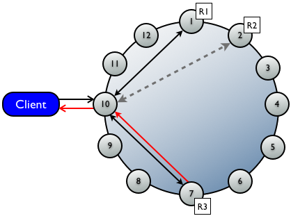

Based in
USA, New Zealand, Australia, France
Repair
Pain
Strategies
Incremental Repair
Repairs is the way to ensure
consistent data on disk

anti-entropy
--> validation compaction
--> merkle tree
--> streaming
RepairJob
(Merkle Tree)
RepairSession
Differencer
StreamingRepairTask
RepairSession
StorageService
Don't Repair
Break It Down
$ bin/nodetool repair -pr$ bin/nodetool repair -in-local-dc$ bin/nodetool repair -st 3074457345618258602 -et -9223372036854775808For automatic range repairs
see https://github.com/BrianGallew/cassandra_range_repair
Incremental Repairs
$ tools/bin/sstablemetadata keyspace1-standard1-ka-5-Data.db
SSTable:
...
Repaired at: 0
$ bin/nodetool repair --incremental
$ tools/bin/sstablemetadata keyspace1-standard1-ka-5-Data.db
SSTable:
...
Repaired at: 1454500502306$ ls -lah keyspace1/standard1
keyspace1-standard1-ka-9-Data.db
keyspace1-standard1-ka-10-Data.db
$ bin/nodetool repair --incremental
-st 3074457345618258602 -et -9223372036854775808
$ ls -lah keyspace1/standard1
keyspace1-standard1-ka-11-Data.db
keyspace1-standard1-ka-12-Data.db
keyspace1-standard1-ka-13-Data.db
keyspace1-standard1-ka-14-Data.db$ tools/bin/sstablemetadata keyspace1-standard1-ka-11-Data.db
...
Repaired at: 1454504607623
$ tools/bin/sstablemetadata keyspace1-standard1-ka-12-Data.db
...
Repaired at: 0
$ tools/bin/sstablemetadata keyspace1-standard1-ka-13-Data.db
...
Repaired at: 1454504607623
$ tools/bin/sstablemetadata keyspace1-standard1-ka-14-Data.db
...
Repaired at: 0stablerepairedset all SSTables